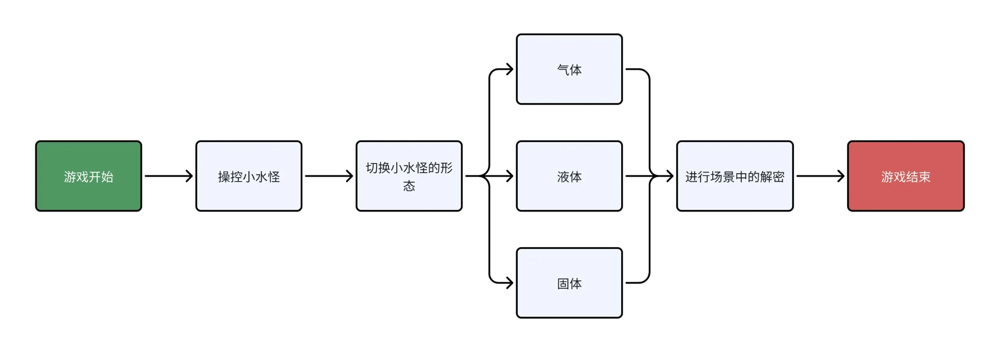
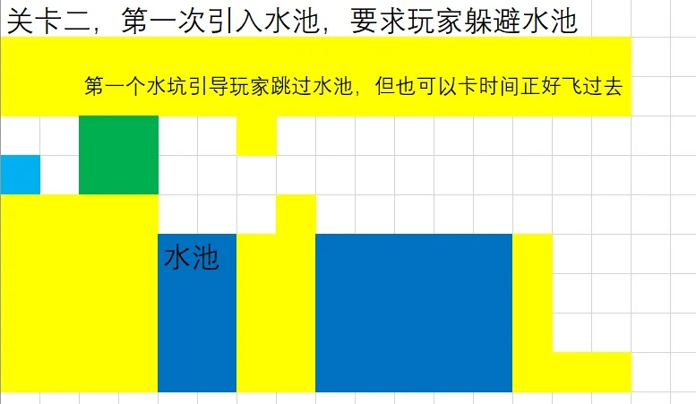
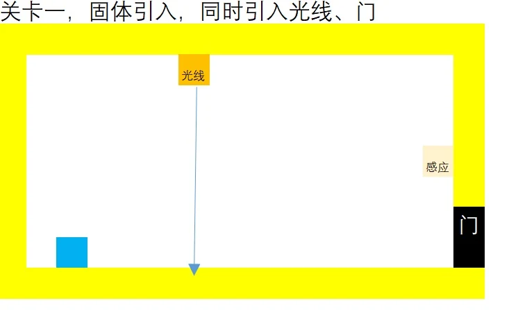
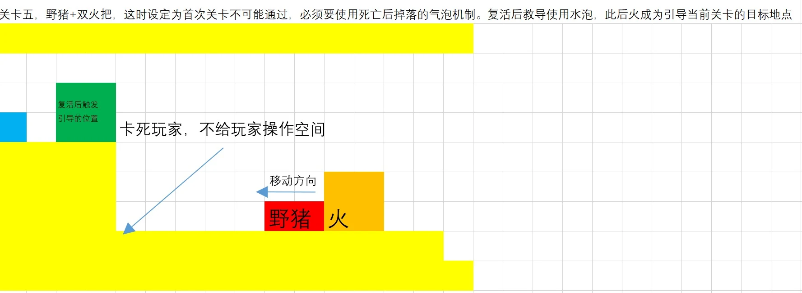
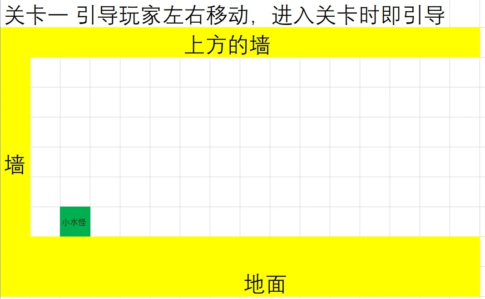
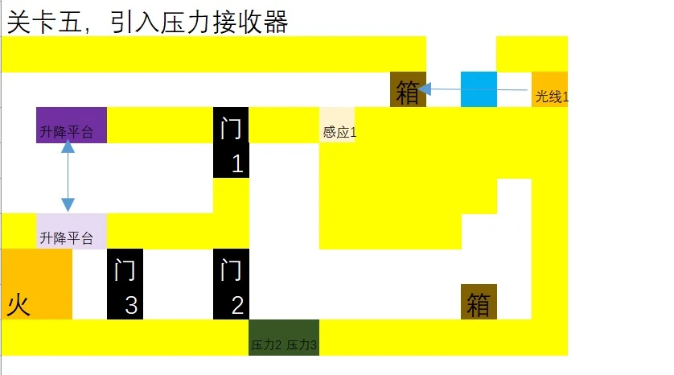
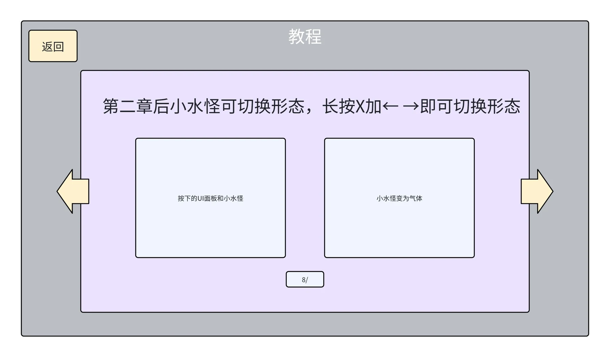

水滴环游记A little drop, many possibilities.
把水的三态变化变成玩家的行动语言：同一片空间，因为能力与资源的不同，出现不同的走法。

01先明确三种形态的能力边界
《水滴环游记》是一个用水循环组织机制的 2D 平台解谜项目。玩家的核心任务不是频繁切换外观，而是根据当前障碍、剩余资源和需要抵达的位置，选择能够完成下一段动作的形态。三种状态被刻意设计成互相补足，而不是简单的强弱升级。
| 形态 | 可以做什么 | 限制如何转化为关卡 |
|---|---|---|
| 液体 | 常规移动与跳跃；发射水柱，与火堆、敌人和气泡交互 | 需要站位和出手机会，不能直接解决所有高度问题 |
| 气体 | 持续上浮，并可进行水平移动 | 无法主动向下移动；进入气态前就要考虑顶部障碍与回到地面的办法 |
| 固体 | 保持位置，参与光线反射等交互 | 放弃移动能力，把角色暂时变成一个场景机关 |
这组约束让“到达目标”分成空间和时机两个问题：液体处理近距离操作，气体改变垂直可达性，固体则改变场景中的信息或机关连接。角色能力和机关规则共用同一套空间，而不是每种形态只对应一把专用钥匙。






02“变”：把操作变成有预算的决策
策划案用上限为两点的“变”约束喷水和部分形态转换。它不是一个和玩法分离的能量条：当喷水、状态变化和资源拾取共用预算时，玩家必须在解决眼前障碍与保留后续能力之间做选择。
水泡既是补给，也是空间对象
水泡在资源不足时提供补充，随后可以成为会上浮、会被障碍阻挡的气泡；喷水又能让气泡下沉。这样，同一个对象同时承担了资源补给和空间变化的功能，玩家需要判断拾取之后是否会影响路径。
死亡如何进入解题过程
设计中死亡后重载当前关卡，并在适用条件下留下一个死亡水泡；后一次死亡替换前一次留下的水泡。它让失败不只是时间惩罚，也可能改变下一次尝试可利用的信息与补给位置。火堆等特殊死亡条件另有差异，需要通过明确反馈让玩家理解。


03教学顺序：从一个动作，到规则组合
关卡表不是只画出终点和障碍，而是为每一关写下要引入的认识。第一组场景从左右移动、跳跃开始，随后引入敌人巡逻、正反面接近差异、喷水反制和死亡水泡；玩家掌握基础后，再把这些关系组合成多种通关思路。




| 阶段 | 新增认识 | 主要设计问题 |
|---|---|---|
| 田野边际 | 常规行动、野猪、水泡、火堆 | 让玩家先读懂危险与反制，再接触资源依赖 |
| 水泊湖畔 | 气态上浮、水池、气泡与升降平台 | 让垂直移动受到落点和切换时机的约束 |
| 神秘森林 | 固态、光线、箱子、压力接收器 | 从个人移动扩展为对场景因果关系的控制 |
| 综合关卡规划 | 跨章节机制复用 | 用已有知识形成组合题，而不是再增加一套规则 |
这些是策划案与关卡表中的教学规划，不能简单将每张草图视为最终实机中的完整关卡。案例保留图稿，是为了说明“规则怎样变成空间约束”的设计过程。
04把状态与资源做成读得懂的反馈
设计案尝试让角色眼睛形态随剩余资源变化，配合 UI 呈现“变”的数量；移动拖尾区分动作状态。选择形态时，通过减慢世界流速和压暗画面给玩家一个短暂的决策窗口，使状态切换可以被计划，而不只是紧张时的反射按键。


反馈的目标是减少两个猜测：我现在能做什么，以及做完这个动作之后还剩什么。关卡难度应来自组合选择，而不是玩家无法确认当前状态。
05我的工作与这次设计的收获
我的工作
总体流程、玩法与关卡设计／搭建，整理场景机关和资源关系，并沟通美术主题及场景需求。
协作与基础
美术、开发与关卡落地由团队协作完成。实机图是团队成果，关卡图稿呈现设计过程。
这次实践让我更关注“一个机制可以支撑多少种情境”。三态本身很容易解释，但只有当移动、反射、敌人和资源共享规则时，关卡才会形成可迁移的理解。后续迭代值得继续检查教学顺序、无解状态与失败后的信息反馈。